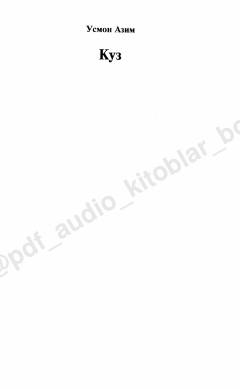

KUsmon Azim qalamiga mansub lirik she'rlar to'plami.
O'zbekiston xalq shoiri Usmon Azimning ushbu to'plami lirik she'rlardan iborat. Kitobda inson ruhiyati, tabiat manzaralari va hayotiy falsafiy mushohadalar o'ziga xos uslubda ifodalangan.